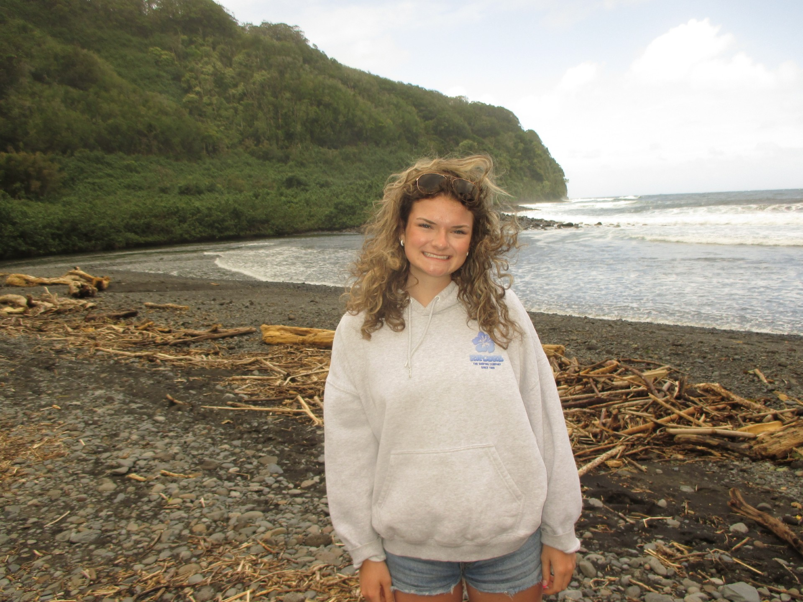
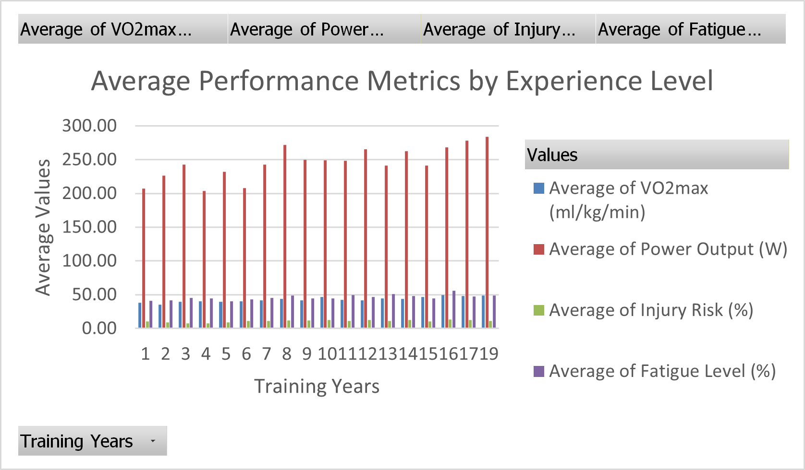

My Scratch Game, Toxic Watermelons!
Toxic watermelons is a fun dodge-game. To play the game you have to move your mouse, Ben will follow your mouse. Watermelons may ony be collected after they have reached the ground.

About Me!
Hi! Im Katie Zbytnuik, if you would like to learn more about me click the button below!!

Athlete Data Excel Graph
This graph was completed during an in-class exercise.In this exercise I learned how to efficiently use and process raw data and create a pivot table, slicer and a pivot table analysis output.
My Scratch Game, Octopus Lost in th Ocean!
Oh no! The octopus is lost in the ocean and needs to get through the maze! Can you help? To control her movements, use the arrow keys on your keyboard. You will have 45 seconds to help her through the maze or her position will reset. Don't touch the walls or you will be given a 5s penalty! Can you do it?!
My Maze Game, Dancing Through Mazes!
Oh no! The poor ballerina is late for dance! Can you help her solve the maze and get there in time? Use your critical thinking skills and help the ballerina dnace her way through the mazes!

Future Plans
In the future, I hope to pursue a career as a Physician Assistant. My goal is to work in a health care setting where I am able to apply my kinesiolgy based knowledge of human physiology to support clinicians. Through my kinesiology degree, I am building a strong understanding of anatomy, physiology, and data analysis, this will help to prepare me for the demands of PA program.